Activity: Functional features in consumer products
This activity demonstrates the placement of several functional features commonly used in plastic part design.
Use the following commands to finish the design of an automotive speaker grille.
-
Vent
-
Web network
-
Lip
Click here to download the activity file.
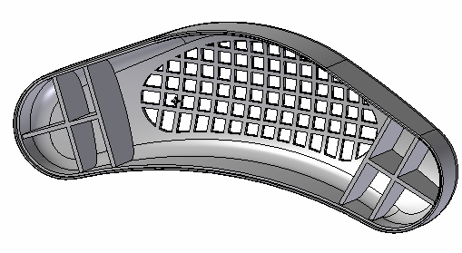
In this activity, you will add several features to further the design of a speaker cover.
-
Open plastics.par.
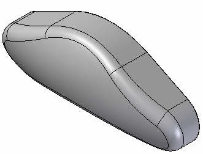
Rotate the view 180° about the Z-axis to see the backside of this model.
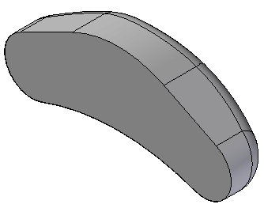
On the Home tab→Solids group, choose the Thin Wall command
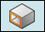
.The part selects automatically. Type 5 mm for the thickness. Ensure the arrow points inward towards the model's center and select the back planar face as the open face.
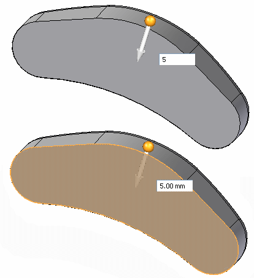
The preview shows the material is removed. Right-click to finish.
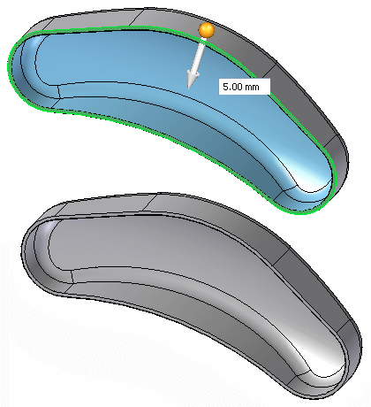
Return to an isometric view by pressing Ctrl + I.
In PathFinder, click the plus sign on the Sketches collector. Click the Vent Sketch box to turn on the sketch display.
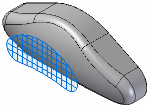
On the Home tab→Solids group, choose the Vent command .
The vent command is located on the Thin Wall list.
In the Vent Options dialog box, set the thickness and depth for the ribs and spars as shown in the table below and select OK.
|
Ribs |
Spars |
|
|
Thickness |
5.00 mm |
5.00 mm |
|
Depth |
5.00 mm |
5.00 mm |
Select the chain shown to define the vent's boundary and then click Accept in the command bar.
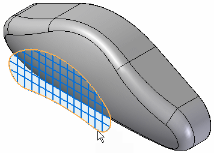
Select the 13 vertical lines for the rib definition.
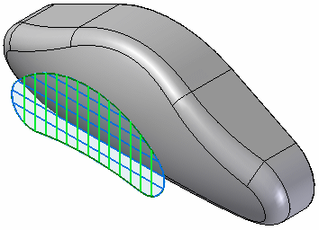
Accept these in the command bar.
To deselect an element from the rib definition step, hold the Ctrl key down and select the element.
Select the 5 horizontal lines for the spar definition.
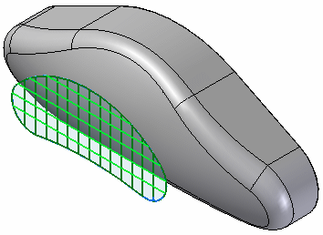
Accept these in the command bar.
Select the side shown for the Extent.
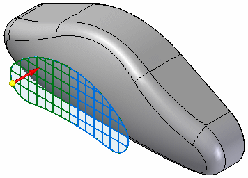
The vent feature takes a short time to process. When finished, you see the preview. Click Finish in the command bar.
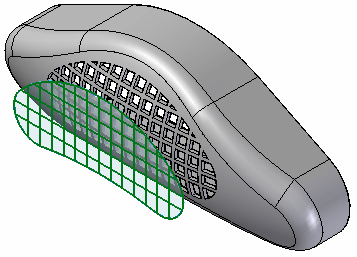
In the PathFinder, open the Sketches collector and turn off Vent Sketch.
Rotate the view to see the backside. In the Sketches collector, turn on the sketch named Rib Network Sketch.
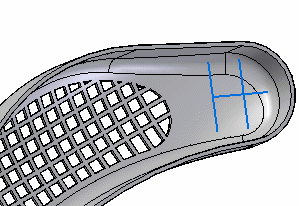
On the Home tab→Solids group, choose the Web Network command .
The Web Network command is located in the Thin Wall list.
Select the 3 lines in the sketch. Click Accept in the command bar.
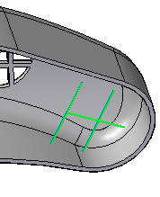
For the direction step on command bar, type 5 mm for the thickness.
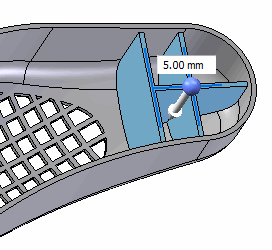
Select Accept in the command bar.
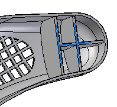
Turn on the display of the Right (yz) reference plane. This plane will be the mirror plane.
Select the web network feature.
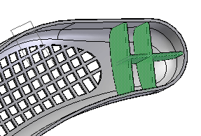
On the Home tab→Pattern group, choose the Mirror command.

Select the Right (yz) base reference plane as the mirror plane. The preview shows the results.
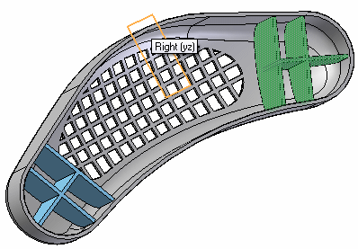
Left-click to finish. Turn off the reference planes.
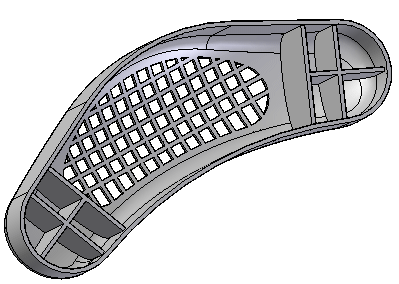
On the Home tab→Solids group, choose the Lip command
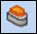
.The Lip command is located in the Thin Wall list.
Select the inside edge of the thin wall and Accept in command bar.
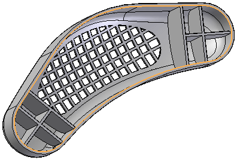
On the Lip command bar, type 3 for the width and 5 for the height.
A rectangle appears where the lip begins. Zoom in for closer view.
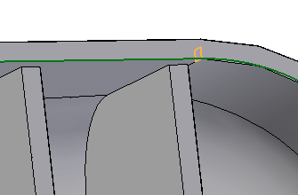
There are 4 possible positions for the rectangle. Position the rectangle as shown above to remove material from the thin wall.
The long side of the rectangle should be pointing down along the part wall.
Click to create the lip.
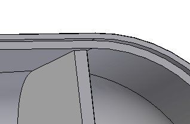
Select Finish. The lip is placed.
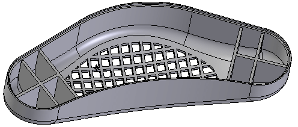
Save and close this file.
In this activity you learned how to create vent and web network features. Since there are several steps in creating these features, be sure to use the command bar to go back to a previous step if the desired results are not achieved.
-
Click the Close button in the upper-right corner of this activity window.